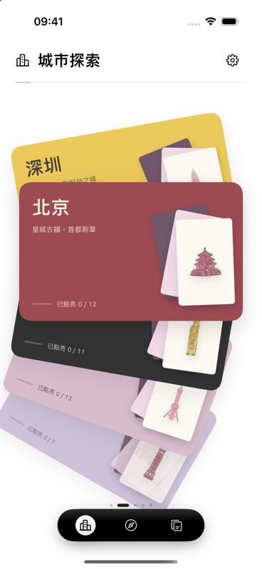
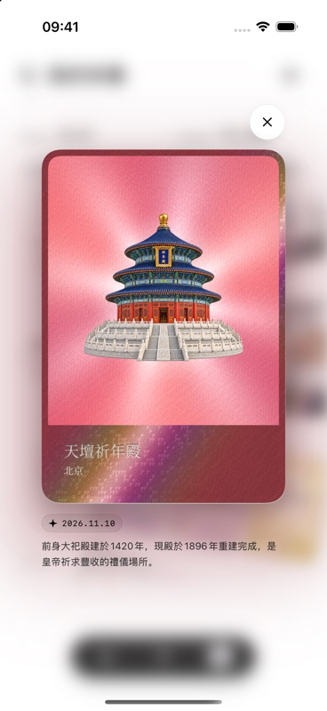
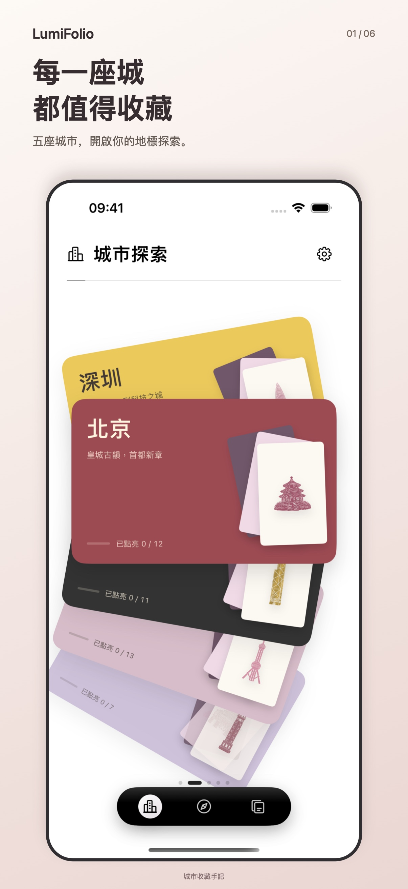
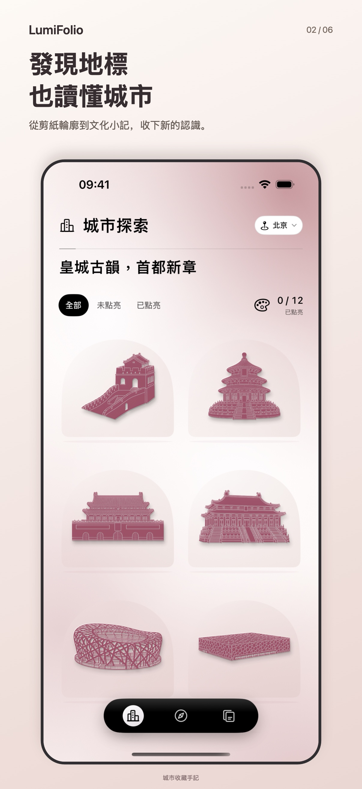
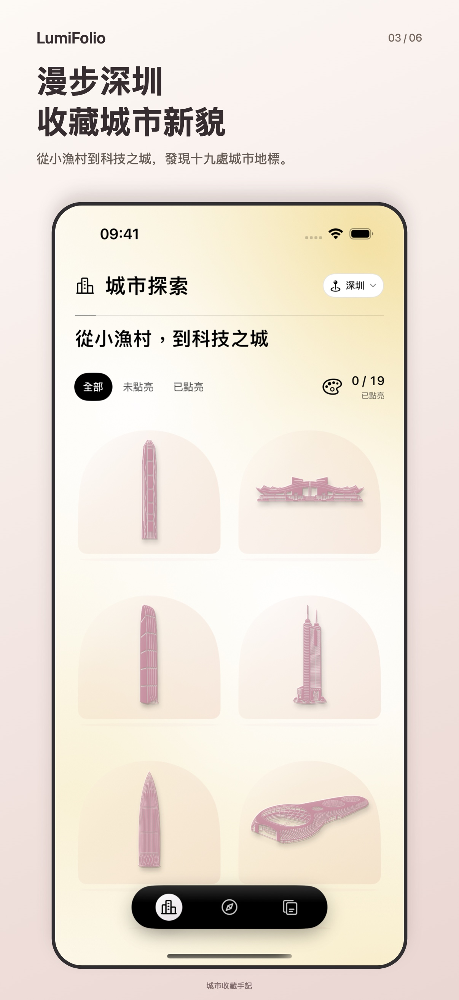
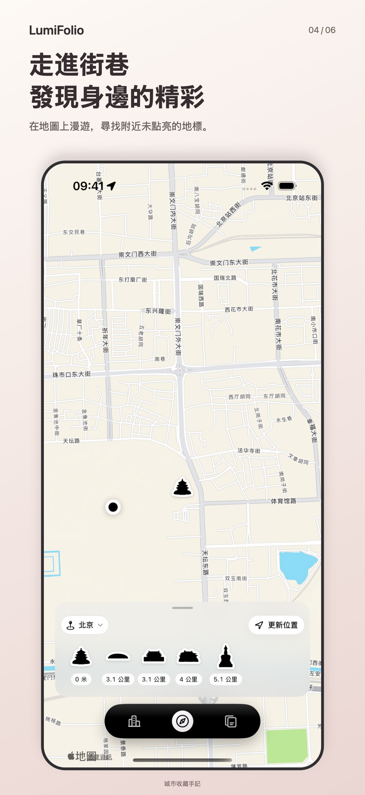
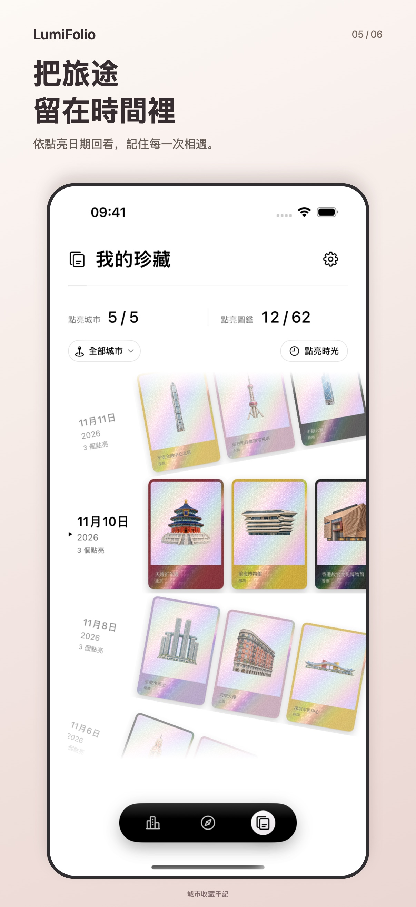
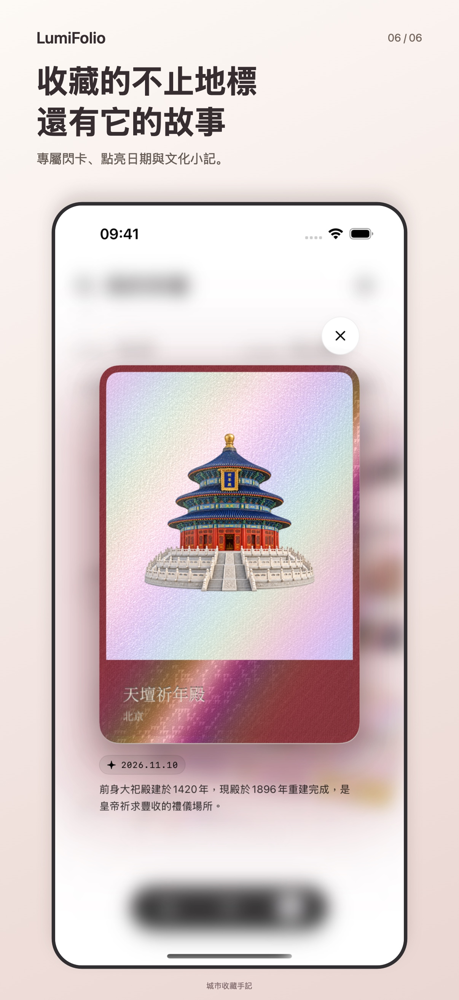

城市探索 · 地標圖鑑 · 卡牌收藏
把城市相遇，收進珍藏。
一款中國地標建築圖鑑與拍照打卡 App。發現建築、點亮卡牌，把旅途中的相遇留在自己的珍藏裡。
目前支援：北京 · 上海 · 深圳 · 香港 · 重慶


讓每一次出發，
都有值得收藏的發現。
從天壇祈年殿到現代城市天際線，LumiFolio 用中國剪紙的視覺語言，串起建築、照片與城市記憶。無論你喜歡建築、城市攝影，還是卡牌收藏，都可以按自己的節奏探索。
APP 一覽
從發現，到珍藏。
看看 LumiFolio 裡的城市與故事。點擊圖片，可查看完整截圖。












下一次遇見，從這裡開始。
- 01
選擇一座城
瀏覽北京、上海、深圳、香港和重慶的地標圖鑑，循著剪影與線索，發現想去的地方。
- 02
拍下你的發現
選擇地標，拍照或從相簿選圖，在裝置上辨識；到訪地標附近，也可以用定位點亮。
- 03
留下城市記憶
把點亮的地標收進珍藏，閱讀文化小記，回看點亮日期，欣賞隨拖動或傾斜變化的閃卡反光。